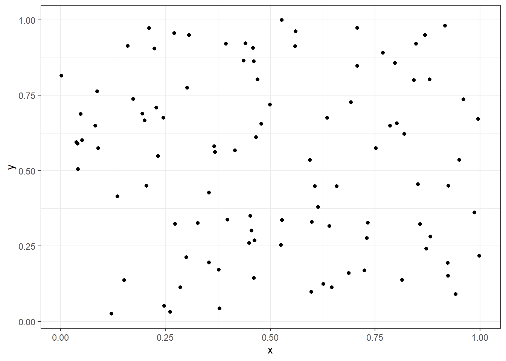

Chap. 11 reticulateでPythonを使う
RとPythonのパッケージは，相互に移植されていることが多い． 例えば，Pythonのlogging(とRのfutile.logger)をもとにRのパッケージloggerは開発されている． https://cran.r-project.org/web/packages/logger/index.html また，Rのggplot2やdplyrはPythonにも移植されている．
ただし，どちらか片方でしか利用できなかったり，使用方法が難しいことがある． そんなとき，ちょっとだけ使うのであれば，Rのパッケージreticulateが便利である． もちろん，Pythonをちゃんと勉強するのも良いだろう． さらに，reticulateを使うとRとPythonとの変数のやり取りが簡単にできるので，本格的にPythonを使うのにも良さそう．
11.1 準備
install.packages("reticulate")library(tidyverse)
library(reticulate)
library(automater)11.1.1 PythonとPyAutoGUIのインストール
Pythonとそのライブラリのインストールを参照して，PythonとPyAutoGUIをインストールしておく．
ライブラリの一覧の中に，あとで使うnumpy，matplotlib，artがなければインストールしておく．
なお，この文書ではPythonをパッケージ版でインストールしするとともに，pipでパッケージを管理している．
Anacondaやminicondaで仮想環境を使用している場合は，retuculate::conda_install()でパッケージをインストールする．
system("pip list", intern = TRUE) %>%
tibble::as_tibble() %>%
dplyr::filter(stringr::str_detect(value, "numpy|matplotlib|art"))
## A tibble: 0 × 1
## ℹ 1 variable: value <chr>一覧に”numpy”，“matplotlib”，“art”などのライブラリ名がなければ，以下のコードでライブラリをインストールする．
system("pip install numpy", intern = TRUE)
system("pip install matplotlib", intern = TRUE)
system("pip install art", intern = TRUE)ライブラリがインストールできたか念のため確認したい場合は，以下のようにする．
system("pip list", intern = TRUE) %>%
tibble::as_tibble() %>%
dplyr::filter(stringr::str_detect(value, "numpy|matplotlib|art"))
## # A tibble: 3 × 1
## value
## <chr>
## 1 art 5.9
## 2 matplotlib 3.7.1
## 3 numpy 1.24.211.1.2 使用するPythonの指定
1つのパソコンにバージョンや形態の異なるPythonを複数インストールすることが可能である．
Pythonとそのライブラリのインストールで説明したようなPythonパッケージのインストーラを用いたもの(パッケージ版Python)もあれば，Microsoft Store版のPythonもある．
さらに，Anacondaをインストールしてその中でPythonを使うこともできる．
色々とあってややこしいが，この文章ではパッケージ版Pythonを使うことにする．
reticulateで使用するPythonとしてインストールしたパッケージ版Pythonを指定する．
なお，AnacondaなどにあるPythonを使う場合は，別途インストールして，use_condaenv()で指定する．
ここでは，パッケージ版Pythonを使用する．
Pythonのパスが分かってれば，use_python()でそのパスを指定する．
パスが分からなければ，以下のようにfind_python()を使うことができる．
Pythonが1つだけのときは，パスがそのまま取得できる．
複数のPythonがインストールされている場合は，メニューが表示される． 例えば，以下のような文字列が入っている可能性がある． C:/Users/your_user_name/AppData/Local/r-miniconda/envs/r-reticulate/python.exe C:/Users/your_user_name/AppData/Local/Microsoft/WindowsApps/python.exe
メニューが表示されれば，使用するPythonのパスの番号を入力する． どれを使っていいのかわからない場合は，“0”でとりあえず全部のパスを出力する． その後，それぞれのパスのPythonがどのようなものか確認してからどれを使うか決める．
なお，Windowsでパスに”WindowsApps/python.exe”があるときは，このファイルはアプリ実行エイリアスという機能でPythonをインストールための実行ファイルである． 以下を参考にアプリ実行エイリアスの設定でチェックを外すとパスの一覧からは出なくなる．
参考：https://hrkworks.com/it/programming/python/py-4421/
find_python <- function(select_memu = TRUE){
os <- get_os()
python_path <-
ifelse(os == "win", "where python", "which python") %>%
system(intern = TRUE) %>%
fs::path()
if(length(python_path) > 1){
if(select_memu){
choice <- utils::menu(python_path, title = "Select Python path. 0: exit and return all.")
if(choice == 0){ return(python_path) }
}else{
return(python_path)
}
}else{
choice <- 1
}
return(python_path[choice])
}
path <- find_python()
path## C:/Users/matu/AppData/Local/Programs/Python/Python311/python.exereticulate::use_python(path)11.2 Pythonを使ってみる
11.2.1 Pythonの呼び出し
repl_python()を実行するとRからPythonを呼び出すことができる．
Python実行時にはコンソールが>から>>>に変化する．
古典的なことだが，まずはHellow World!を実行する．
“Hellow World!”が出力されたら成功である．
コンソールが>>>のときにexitかquitとすればRに戻る．
repl_python()
## Python 3.11.1 (C:/Users/username/AppData/Local/Programs/Python/Python311/python.exe)
## Reticulate 1.28 REPL -- A Python interpreter in R.
## Enter 'exit' or 'quit' to exit the REPL and return to R.
>>> print("Hello World!")
## Hellow World!
>>> exit他にもPythonで実行したいことがあれば，>>>のときに入力する．
11.2.2 RからPythonのHellow World!
Pythonにあらかじめ用意されているビルトイン関数を使うには，import_builtins()を使う．
import_builtins()で生成したオブジェクトに$とPythonの関数名をつければ，Rの関数として使うことができる．
builtins <- reticulate::import_builtins()
builtins$print('Hellow World!')ふつうにHellow World!をしていても面白くないので，ちょっと変わったHellow World!をしてみる． ライブラリartを呼び出して，Hellow World!をするとちょっと面白い．
art <- reticulate::import("art")
art$tprint("Hellow World!")
## _ _ _ _ __ __ _ _ _
## | | | | ___ | || | ___ __ __ \ \ / / ___ _ __ | | __| || |
## | |_| | / _ \| || | / _ \ \ \ /\ / / \ \ /\ / / / _ \ | '__|| | / _` || |
## | _ || __/| || || (_) | \ V V / \ V V / | (_) || | | || (_| ||_|
## |_| |_| \___||_||_| \___/ \_/\_/ \_/\_/ \___/ |_| |_| \__,_|(_)
art$tprint("FUN", font = "block", chr_ignore = TRUE)
## .----------------. .----------------. .-----------------.
## | .--------------. || .--------------. || .--------------. |
## | | _________ | || | _____ _____ | || | ____ _____ | |
## | | |_ ___ | | || ||_ _||_ _|| || ||_ \|_ _| | |
## | | | |_ \_| | || | | | | | | || | | \ | | | |
## | | | _| | || | | ' ' | | || | | |\ \| | | |
## | | _| |_ | || | \ `--' / | || | _| |_\ |_ | |
## | | |_____| | || | `.__.' | || ||_____|\____| | |
## | | | || | | || | | |
## | '--------------' || '--------------' || '--------------' |
## '----------------' '----------------' '----------------' 遊んでばかりいても仕方ないので，ちょっと真面目に使ってみよう．
Pythonで，np.random.randと表記するものをRで使うには，np$random$randとする．
Rのオブジェクトに代入してしまえば，あとは慣れたもので簡単に散布図が作成できる．
np <- reticulate::import("numpy") # import numpy as npと同じ
x <- np$random$rand(as.integer(100))
y <- np$random$rand(as.integer(100))
tibble::tibble(x, y) %>%
ggplot2::ggplot(aes(x, y)) +
ggplot2::geom_point() +
ggplot2::theme_bw()
11.3 PythoとRとの変数のやり取り
行ったり来たりつつRとPythonを使いたいことがあるかもしれない．
つまりrepl_python()を使ってPythonに入って，exitでRでに戻って，またPythonに入るなどである．
そのときに，RとPythonの変数のやりとりができる．
PythonでRのvariableという変数を取り出したいときはr.variable，RでPythonのvariableという変数を取り出したいときにはpy$variableとする．
r.variable # RからPythonへ(Pythonで取り出し)，variableは変数名
py$variable # PythonからRへ(Rで取り出し)これでRとPythonを対話的に行きつ戻りつしながら実行できる．
a <- "r_val"
repl_python(quiet = TRUE)
>>>r.a
## 'r_val'
>>>a = "python_val"
>>>exit
py$a
## [1] "python_val"11.4 Pythonのコードを実行
既にPythonの関数やコードのファイルがある場合は，source_python()でファイルを読み込んで使うことができる．
reticulate::source_python()source_python()でのコード内の関数や変数をそのままRで使うことができる．
reticulate::py_run_file("script.py")
reticulate::py_run_string("x = 10")py_run_file()やpy_run_string()でのコード内の変数や関数をRで使う場合は，py$valのようにpy$の後ろに変数や関数の名前を付ける必要がある．
11.5 コラム：RとPythoでの用語の違い
Pythonでのモジュールとはファイル(*.py)のことで，モジュールをまとめたものがパッケージ，パッケージをまとめたものがライブラリである．
このライブラリをpip installでインストール，import()でインポートしている．
つまり，Rでのパッケージにあたるのが，Pythonでのライブラリである．
# USB取り出し用の画像のトリミング(作業済)
# トリミングをしたほうが画像認識がうまくいくかとおもったが，逆にダメだった
# library(tidyverse)
# path <-
# "D:/matu/work/ToDo/automater/inst/img" %>%
# fs::dir_ls(regexp = "png")
# img <-
# path %>%
# purrr::map(magick::image_read) %>%
# purrr::map(magick::image_trim)
# purrr::map2(img, path, magick::image_write)
# path # 画面サイズの取得だが，実際は拡大をしていたりするので，ちょっと数字が違う
# system("wmic path Win32_VideoController get VideoModeDescription,CurrentVerticalResolution,CurrentHorizontalResolution /format:value")